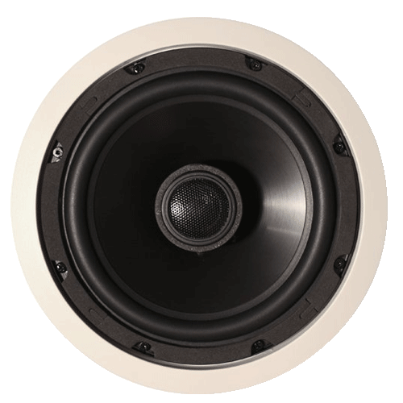

słuchaj w winampie
albo w swoim odtwarzaczu

http://polmaxfm.ga/polmax.m3u
Linki bezpośrednie do słuchania
http://stream.zeno.fm/1gg3kbnzbceuv
http://stream.zeno.fm/27ufqar63d0uv
Drugi link


Napisz do Radia na czacie
wiadomość albo pozdrowienia
Radio Polmax FM
m